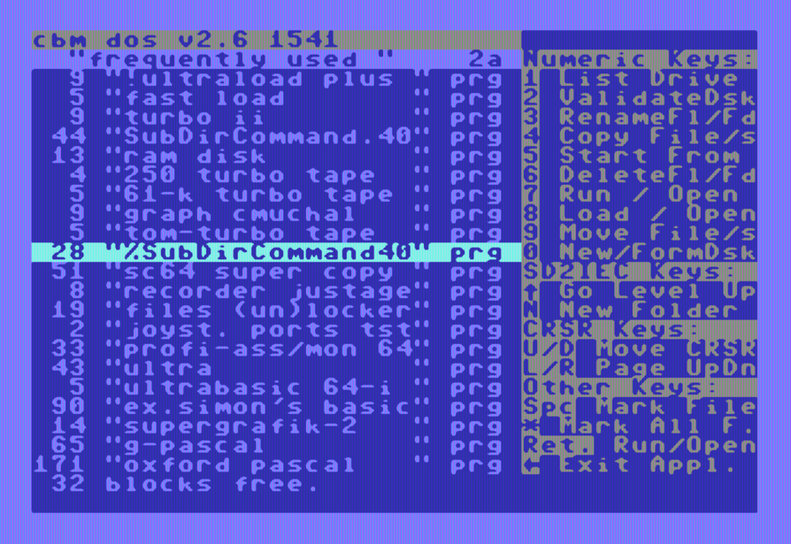

Commodore 64 · 1541 / 1541-II · SD2IEC · pi1541 · Kung Fu Flash
SubDirCommander 2026
A disk commander for a stock C64. List a drive, move through it a line or a page at a time, and run, load, copy, move or delete files, including copies from one drive to another. Rename, validate and format depend on the drive.

Drives
| 1541 / 1541-II | The whole set: rename, copy, move, delete, validate and format. |
|---|---|
| SD2IEC | The same as a 1541, and directories: go up, make a folder, remove a folder. |
| pi1541 | A mounted disk image behaves as a 1541. On the SD card it also changes folders, and it renames, copies and deletes. Validate is not implemented there, and format creates a new D64 instead of wiping the card. Command list. |
| Kung Fu Flash | Kung Fu Flash and Kung Fu Flash 2 list, load, run, delete, copy and move. There is no rename, no validate and no format. Kung Fu Flash 2. |
Run it
In VICE, attach the disk to drive 8:
x64sc -8 SubDirCommand.40.d64Then on the C64, in lowercase:
load "%SubDirCommand40",8
runfor the machine code version, or
load "SubDirCommand.40",8
runfor the BASIC one.
A copy from one drive to another needs a second disk. In VICE on the computer,
attach it as drive 9. That is a flag for x64sc, not a command on the C64:
x64sc -8 SubDirCommand.40.d64 -9 other.d64other.d64 is any second disk image. On a real C64, use the two drives you have and pick the target drive in the commander.
Keys
| CRSR up / down | one line |
|---|---|
| CRSR left / right | page up / page down (22 lines) |
| 1 · F1 | choose the drive and list it |
| 2 · F2 | validate the disk |
| 3 · F3 | rename |
| 4 · F4 | copy: new name, then target drive (default: the current one) |
| 5 · F5 | start address of a program |
| 6 · F6 | delete, after y/n |
| 7 · F7 · RETURN | run a program, open a directory or disk image |
| 8 · F8 | load a program without running it |
| 9 | move a file, on this drive or to another |
| 0 | format the disk |
| N / R | SD2IEC and pi1541: make or remove a directory |
| Space / * | mark one file, or mark and clear all |
| ↑ | SD2IEC and pi1541: one directory level up |
| ← | quit to BASIC |
Validate, rename and format need a 1541, an SD2IEC, or a pi1541 disk image. New folder, remove folder and go up are for SD2IEC and for pi1541 on the SD card. On Kung Fu Flash, use list, load, run, copy, move and delete.
Two versions
Machine code draws the list straight into screen memory, so moving and
paging are instant. It keeps the directory in the RAM under the BASIC ROM and copies
between drives through a 31.25 KiB buffer at $2300-$9fff.
Its direct-return range is $2300-$9fff or
$c000-$cfff; ROM and I/O address ranges are not
supported return targets.
BASIC transports its helpers after the BASIC program, then relocates them
to reserved RAM at $97f0-$9fff. Before Load or Run it names every helper a
selected PRG would overwrite and asks for confirmation.
Loading done right
Programs are handed to BASIC the way you would type LOAD and RUN,
so BASIC sets its end-of-program pointer itself. A program loaded from the commander
saves at its own size.
A failed copy (disk full, write error, RUN/STOP) removes the partial file and gives its blocks back.